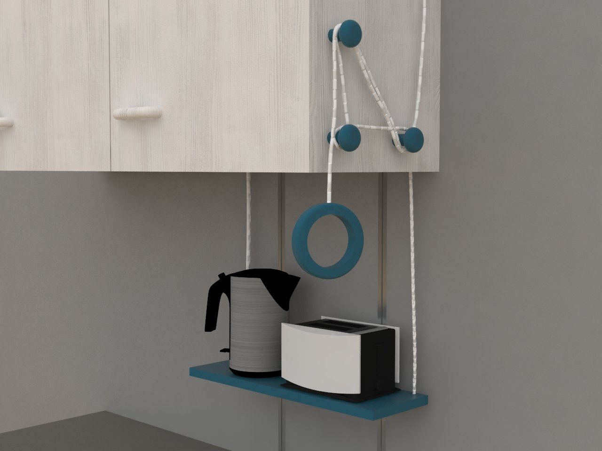
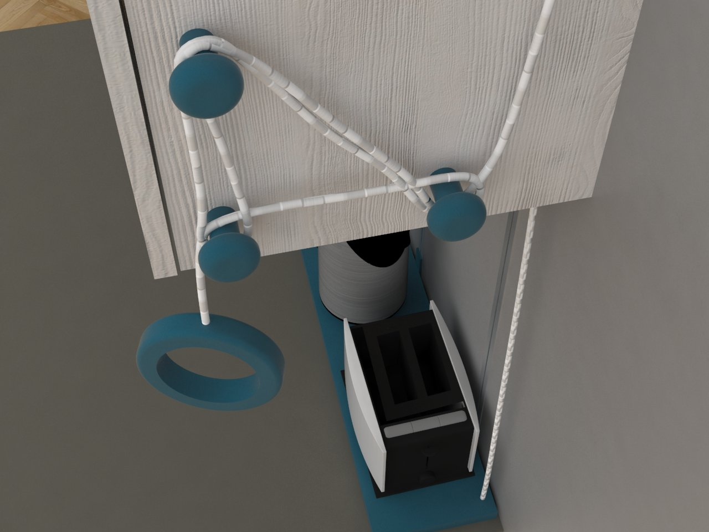
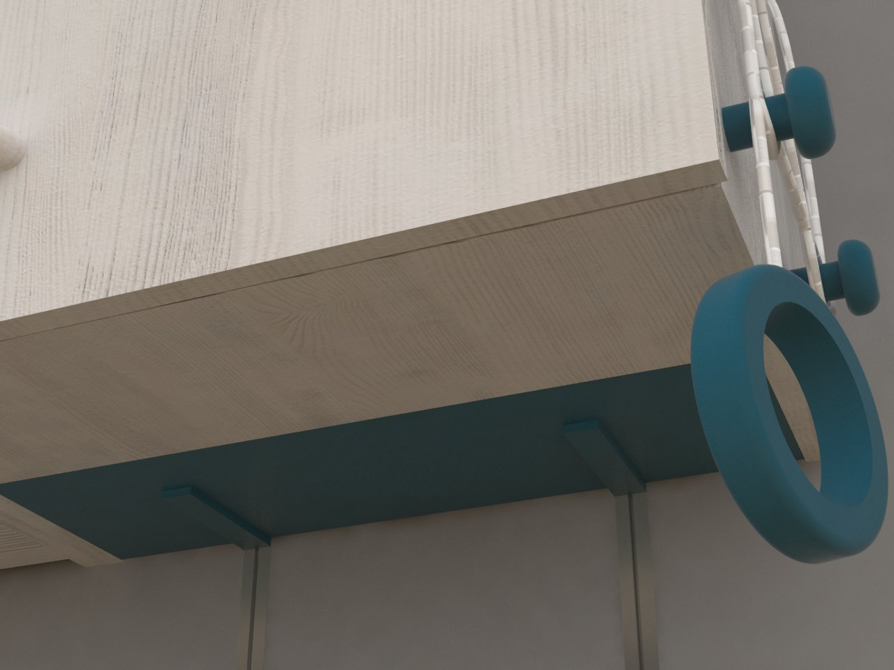
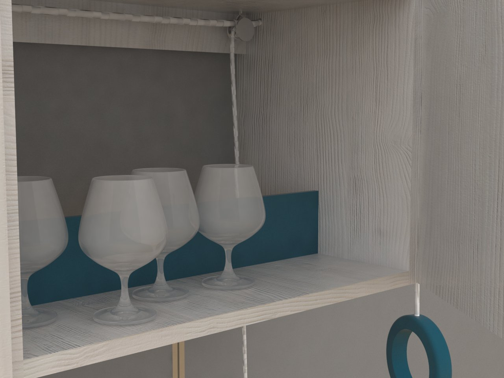

Rutschpartie
In vielen Haushalten sind es die kleinen Küchengeräte die den Platz auf der Arbeitsfläche wegnehmen. Mein Entwurf hilft dabei, diese schnell und einfach im Hochschrank verschwinden zu lassen.
Um Platz zu schaffen, wird der Boden eines Hochregals entfernt und durch ein Brett ersetzt, das entlang eines Schienensystems durch ein Seil hinuntergelassen werden kann. Um keine große Kraft aufwenden zu müssen, läuft das Seil im Inneren des Kastens über Umlenkrollen. Dadurch, dass es nur die hintere Hälfte des Oberschrankes ist, auf dem die Küchengeräte stehen, können an der vorderen Seite noch andere Dinge Platz finden – wie zum Beispiel Gläser, Teller etc.
Programme
Krita, Rhinoceros 5, V-Ray
- 
- 
- 
- 